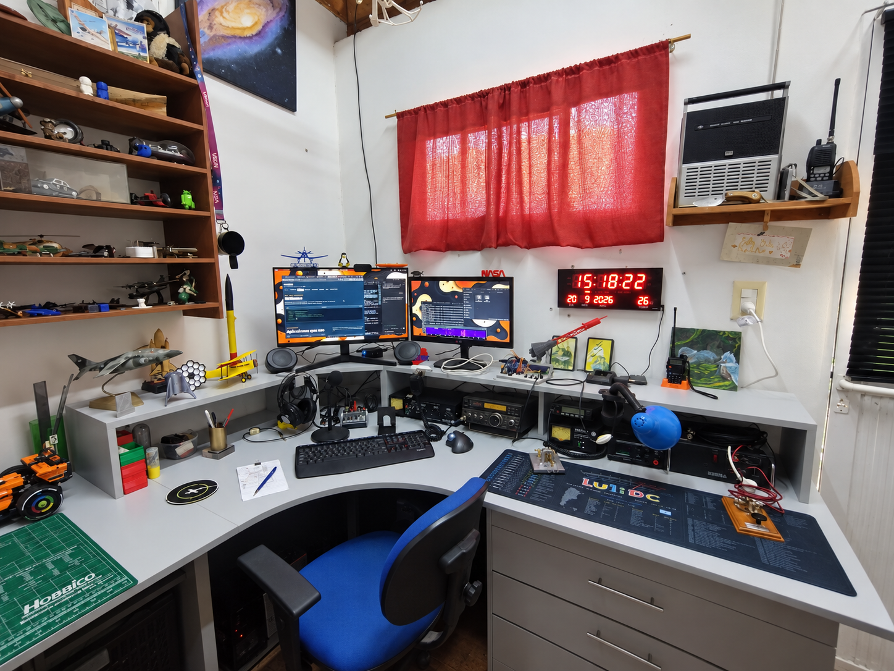
Desde San Javier, Misiones
Un lugar para
salir al aire
LU1IDC · GG22KD
Vista general de la estación · Estado actual
Shack · Equipos · Antenas · Taller
Mi rincón para hacer radio, experimentar y aprender. Un espacio compartido que fue encontrando su forma con cada equipo, cada cable y cada nueva idea.

Desde San Javier, Misiones
Vista general de la estación · Estado actual
01 / El espacio
Mi estación ocupa una parte de un cuarto que también funciona como taller y lugar para otros intereses.
En este espacio conviven la radio, el aeromodelismo, la impresión 3D, la astronomía y algunas colecciones. La estación fue encontrando su lugar entre todas esas actividades.
La distribución no es definitiva: cambia cuando incorporo un equipo, aparece un nuevo proyecto o encuentro una manera más cómoda de trabajar. En el escritorio se reúnen los transceptores, la computadora, el audio, los manipuladores y algunas herramientas de uso habitual.
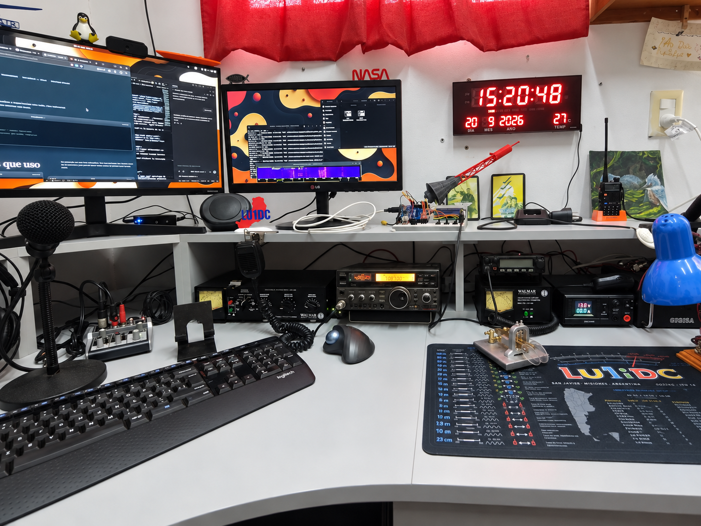
Equipos · Operación · Antenas
Los elementos que forman parte del puesto actual, contados desde el uso que tienen dentro de mi estación.
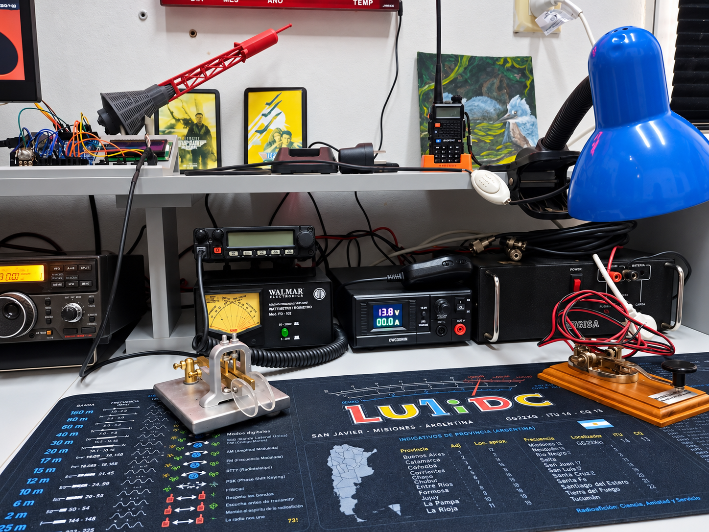
En el puesto se encuentran un handy Baofeng UV-5R para operaciones portátiles y satélites de FM, un Yaesu FT-1802 para la banda de 2 metros, una fuente lineal Rugisa de 22 A y una fuente conmutada DWC30WIN de 30 A.
También utilizo un manipulador Walmar recto y un manipulador iámbico construido por LU9FEI. El audio se completa con una consola Behringer Xenyx 302USB, un micrófono Behringer XM8500 y auriculares AKG K72.
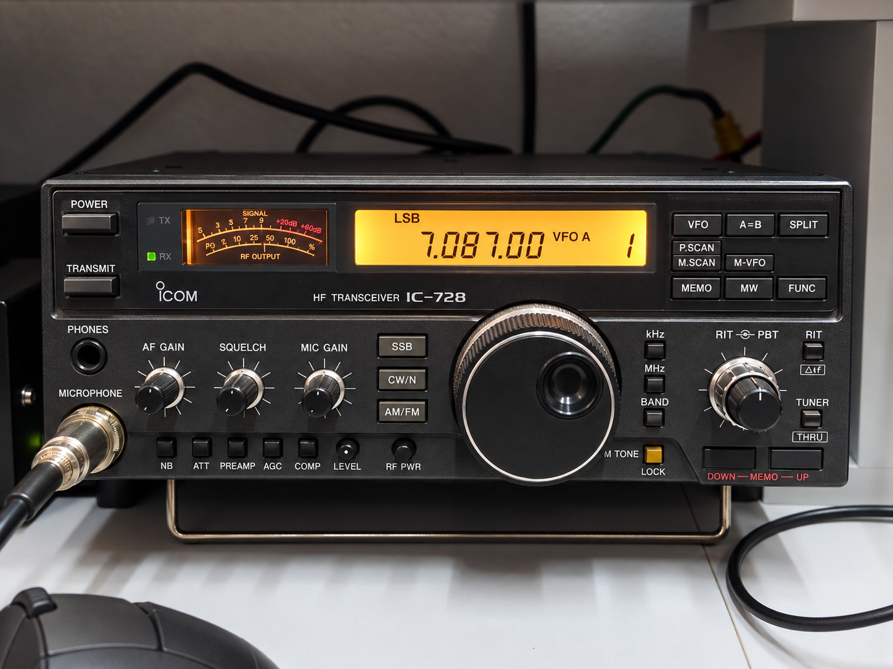
Es mi equipo principal de HF desde noviembre de 2025. Tiene agregado el módulo de AM/FM y trabaja junto con un sintonizador Walmar ZR-200.
Está conectado a la computadora mediante una interfaz CI-V y una interfaz para modos digitales, ambas de TrboRadio.
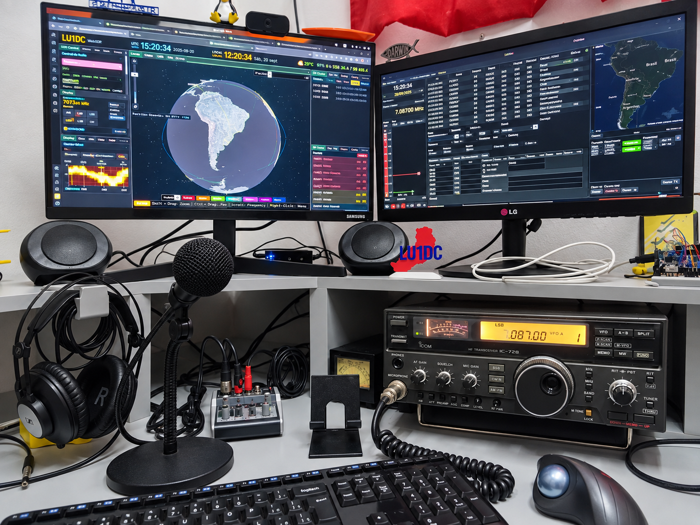
La utilizo para registrar contactos, operar modos digitales, consultar mapas, seguir satélites y controlar algunos equipos.
Ver el software que utilizo →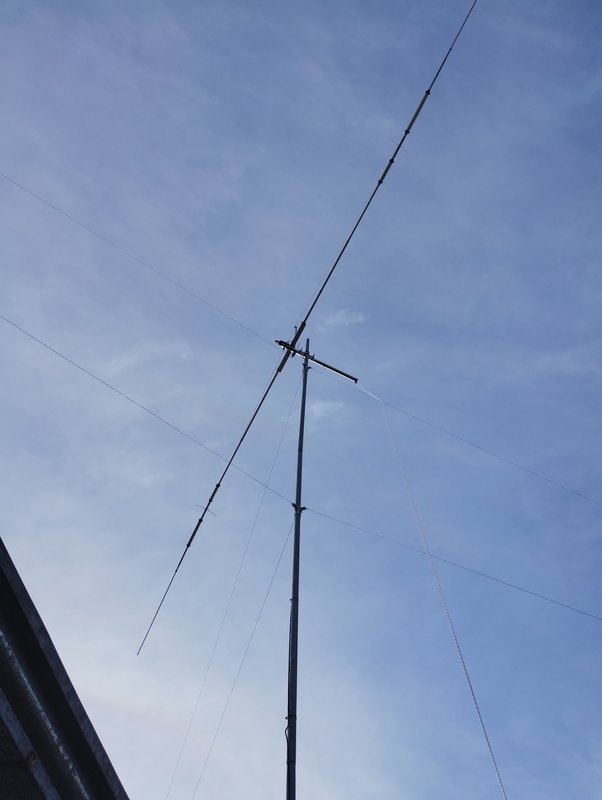
Instalada en marzo de 2026 sobre un mástil galvanizado de tres tramos, a aproximadamente 9 metros de altura.
Es un dipolo rígido para las bandas de 40, 20, 15 y 10 metros.
Archivo personal
Equipos, antenas y configuraciones anteriores que también forman parte de la historia de LU1IDC.
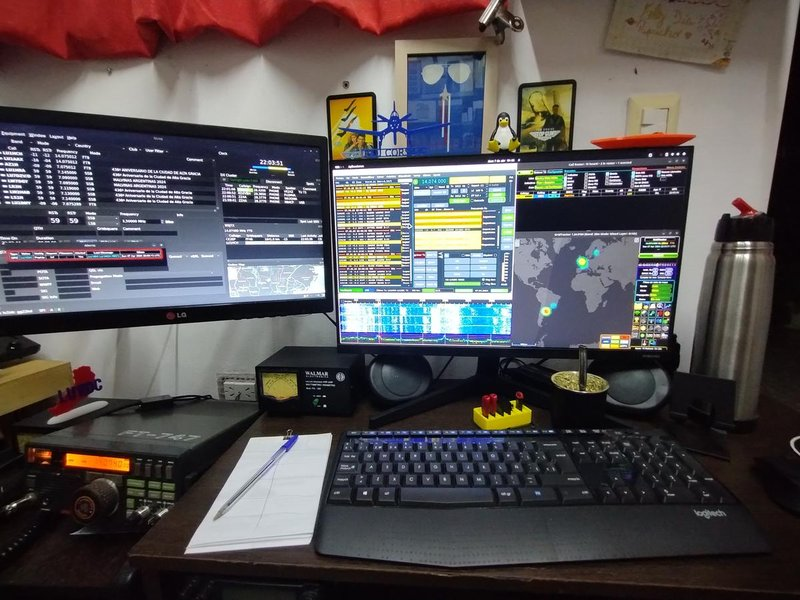
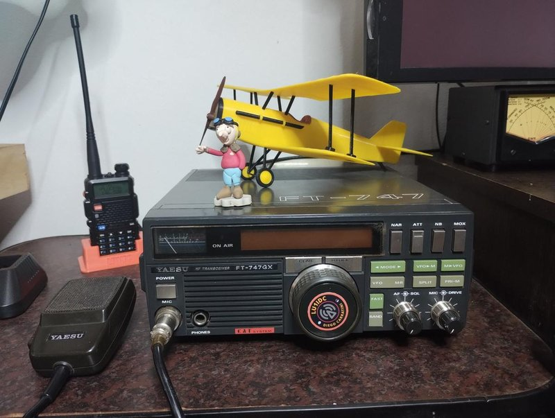
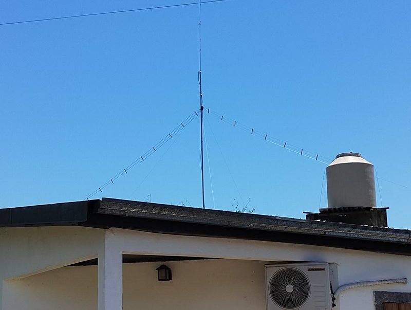
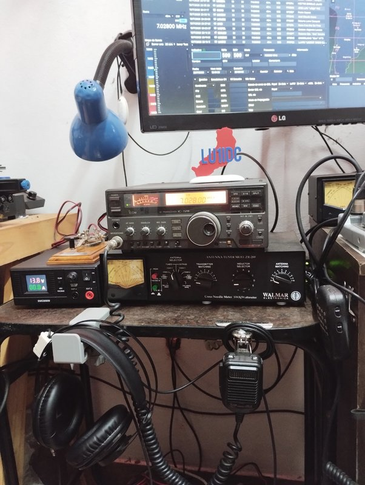
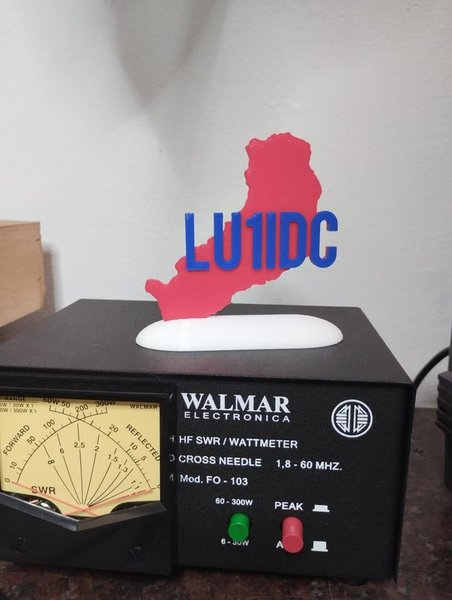